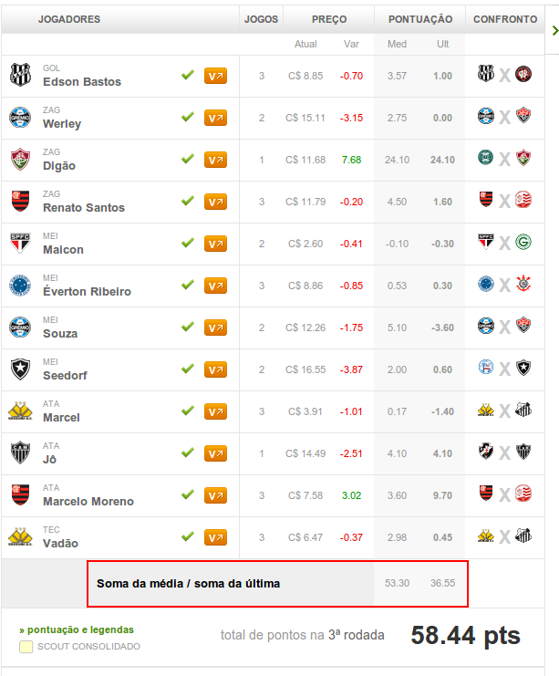

CartolaFC Apps
Como funciona?
O app abaixo permite que você, cartoleiro, visualize a média da pontuação média e da última rodada da sua atual escalação para a próxima rodada.
Com isso, dá pra ter uma idéia se seu time tá bem escalado ou não e se há discrepância muito grande entre as médias.
Como usar?
- Arraste o botão a seguir para sua barra de favoritos
- Entre na página de seu time: http://cartolafc.globo.com/#!/time
- Com seu time escalado, clique no botão que você adicionou no passo 1, na sua barra de favoritos.
- Pronto! Você visualizará as médias de seu time escalado.
- PS: Este app só funciona, por enquanto, no navegador Google Chrome.
CartolaFC App - Médias
Exemplo
Abaixo uma imagem exemplificando o funcionamento do app.
